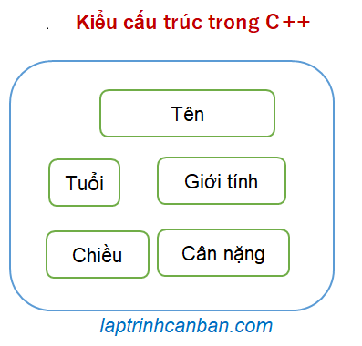
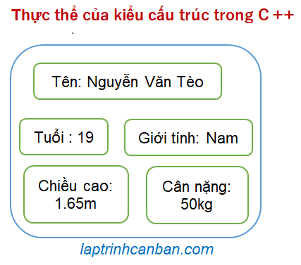

Bạn có đang sử dụng kiểu cấu trúc trong C++ không? Kiểu cấu trúc trong C++, hay còn gọi là struct trong C++ rất tiện lợi khi chúng ta cần xử lý nhiều thuộc tính liên quan tới cùng một đối tượng trong C++. Hãy cùng tìm hiểu kiểu cấu trúc trong C++ là gì, cách khởi tạo, khai báo và truy cập struct trong C++ sau bài học này.
Kiểu cấu trúc trong C++
Kiểu cấu trúc trong C++ là gì
Kiểu cấu trúc trong C++, hay còn gọi là kiểu struct trong C++ là một tập hợp các thuộc tính liên quan tới cùng một đối tượng. Ví dụ điển hình của kiểu cấu trúc là tập hợp các thuộc tính liên quan tới một người như tên, tuổi và giới tính.

Cấu trúc struct trong C++
Các thuộc tính tạo nên một cấu trúc được gọi là các thành viên (tiếng Anh: member) của cấu trúc đó. Trong ví dụ trên, “tên”, “giới tính”, “tuổi”, “chiều cao”, “cân nặng”, v.v. chính là các thành viên trong cấu trúc. Tuy nhiên, chúng ta không thể sử dụng hàm làm thành viên của một cấu trúc được.
Từ một cấu trúc, chúng ta có thể tạo ra vô vàn các thực thể (tiếng Anh: instance) có cấu trúc giống nhau. Từ một thực thể cụ thể, chúng ta có thể gọi các thành viên trong thực thể đó, cũng như gán các giá trị và sử dụng chúng.
Ví dụ, với cấu trúc [người] ở trên, chúng ta có thể tạo ra một thực thể là [Nguyễn Văn Tèo], với các thành viên có giá trị cụ thể như sau:

Cũng giống như mảng thì kiểu cấu trúc trong C++ được sử dụng để nhóm các dữ liệu lại với nhau. Tuy nhiên khác với mảng vốn chỉ có thể nhóm các dữ liệu có cùng kiểu, thì kiểu cấu trúc trong C++ lại có khả năng nhóm các dữ liệu với nhiều kiểu dữ liệu khác nhau.
Ví dụ với cấu trúc [người] ở trên, chúng ta có thể nhóm các dữ liệu khác nhau cùng liên quan tới đối tượng [người], với nhiều kiểu khác nhau như kiểu số (chiều cao cân nặng) lẫn kiểu ký tự (tên, giới tính) v.v..
Có thể nói ưu điểm lớn nhất của kiểu cấu trúc trong C++ chính là khả năng lưu trữ các dữ liệu thuộc nhiều kiểu dữ liệu khác nhau. Bằng việc sử dụng kiểu cấu trúc, các biến cùng liên quan tới một đối tượng trong chương trình với nhiều kiểu dữ liệu khác nhau có thể được kết hợp thành một khối, giúp chúng ta dễ dàng quản lý chúng trong chương trình cũng như giúp việc viết code đơn giản và ngắn gọn hơn.
Khai báo kiểu cấu trúc trong C++
Chúng ta có 2 cách để khai báo kiểu cấu trúc trong C++, đó là sử dụng lệnh struct, hoặc là sử dụng lệnh typedef struct trong C++.
Lệnh struct trong C++
Để khai báo một cấu trúc trong C++, chúng ta viết lệnh struct, sau đó là tên của cấu trúc, tiếp theo là kiểu và tên của các thành viên của cấu trúc ở giữa cặp dấu ngoặc nhọn {}. Cú pháp sử dụng ở đây sẽ là:
struct name{
type1 member1;
type2 member2;
type3 member3;
...
};
Trong đó name là tên của cấu trúc cần khai báo, và các cặp type và member là kiểu và tên của các thành viên trong cấu trúc đó.
Lưu ý là chúng ta cần phải thêm dấu ; vào vị trí cuối cùng khi khai báo cấu trúc. Do cú pháp struct rất giống với hàm nên đôi khi các bạn hay quên dấu này, dẫn đến lỗi chương trình xảy ra.
Ví dụ cụ thể, chúng ta khai báo một cấu trúc có tên là people1 với các thành viên của nó như tên, tuổi, chiều cao và giới tính của đối tượng people1 như sau:
struct people1{ |
Sử dụng typedef struct trong C++
typedef trong C++ là một câu lệnh có tác dụng định nghĩa lại tên của một kiểu đã được định nghĩa bởi một tên khác. Ví dụ, chúng ta có thể định nghĩa lại kiểu int bằng một tên mới là int_new như sau:
typedef int int_new; |
Khi đó, tất cả các biến thuộc kiểu int_new trong chương trình cũng sẽ có kiểu dữ liệu là int.
Khi áp dụng lệnh typedef với kiểu cấu trúc trong C++, chúng ta sẽ có lệnh typedef struct trong C++.Và hiểu theo cách tương tự thì typedef struct trong C++ là một câu lệnh có tác dụng định nghĩa lại kiểu struct bằng một tên khác.
Chúng ta sử dụng cú pháp tổng quát của typedef struct trong C++ để định nghĩa lại tên của kiểu struct như sau:
typedef struct old_struct_name{
type1 member1;
type2 member2;
type3 member3;
...
}new_struct_name;
Trong đó old_struct_name là tên cấu trúc được định nghĩa bởi các thành viên trong giữa cặp dấu ngoặc nhọn {}, và new_struct_name là tên mới mà bạn muốn đặt lại cho cấu trúc này trong C++.
Tuy nhiên trong thực tế thì chúng ta hay lược bỏ đi old_struct_name và khai báo cấu trúc với cú pháp sau đây:
typedef struct{
type1 member1;
type2 member2;
type3 member3;
...
}struct_name;
Với cú pháp này thì do chúng ta không cần quan tâm tới tên ban đầu của cấu trúc, nên struct_name ở đây chính là tên cuối cùng của cấu trúc mà chúng ta cần khai báo.
Ví dụ cụ thể, chúng ta khai báo một cấu trúc có tên là people2 với các thành viên của nó như tên, tuổi, chiều cao và giới tính của đối tượng people2, bằng lệnh typedef struct như sau:
typedef struct{ |
Khởi tạo struct trong C++
Sau khi đã khai báo một cấu trúc trong C++, để sử dụng được cấu trúc này, cũng như truy cập và thao tác với giá trị của các thành viên trong cấu trúc, thì chúng ta cần phải khởi tạo một thực thể từ cấu trúc.
Và tuỳ thuộc vào cách khai báo cấu trúc mà chúng ta cũng có 2 phương pháp để khởi tạo kiểu cấu trúc trong C++ như sau:
Khởi tạo thực thể từ kiểu cấu trúc được tạo bởi struct
Cú pháp khởi tạo một thực thể từ cấu trúc được tạo bởi lệnh struct như sau:
struct struct_name instance_name;
Trong đó struct là câu lệnh, struct_name là tên cấu trúc đã được khai báo, và instance_name là tên của thực thể mà bạn muốn tạo ra từ cấu trúc đó.
Ví dụ, với cấu trúc people1, chúng ta có thể tạo ra một thực thể BaKien với cách viết sau đây:
struct people1{ |
Lại nữa, trong trường hợp bạn muốn gán luôn các giá trị ban đầu vào các thành viên khi tạo thực thể, hãy dùng tới cú pháp sau đây:
struct struct_name instance_name = {member1, member2, member3, ...};
Cách viết này khác với cách viết trên ở chỗ chúng ta sẽ viết lần lượt theo thứ tự giá trị của các thành viên của thực thể, cách nhau bởi dấu phẩy và nằm giữa cặp dấu ngoặc nhọn {}, rồi gán nó vào tên thực thể thông qua toán tử =.
Ví dụ, chúng ta cũng có thể khởi tạo thực thể cùng với các thành viên như sau:
int main(){ |
Khởi tạo thực thể từ cấu trúc được tạo bởi typedef struct
Với một cấu trúc được khai báo bởi câu lệnh typedef struct, chúng ta có khởi tạo một thực thể từ cấu trúc đó với một cú pháp đơn giản hơn như sau:
struct_name instance_name;
Trong đó struct_name là tên cấu trúc đã được khai báo, và instance_name là tên của thực thể mà bạn muốn tạo ra từ cấu trúc đó.
Bạn có thể thấy chúng ta có thể bỏ đi câu lệnh struct khi khởi tạo thực thể từ cấu trúc được khai báo bởi typedef struct.
Ví dụ, với cấu trúc people2 được khai báo bởi typedef struct, chúng ta có thể tạo ra một thực thể ChiPheo với cách viết sau đây:
typedef struct{ |
Khi đó, thực thể ChiPheo với đầy đủ các thuộc tính định nghĩa sẵn trong cấu trúc peple2 sẽ được tạo ra.
Lại nữa, trong trường hợp bạn muốn gán luôn các giá trị ban đầu vào các thành viên khi tạo thực thể, hãy dùng tới cú pháp sau đây:
struct_name instance_name = {member1, member2, member3, ...};
Cách viết này khác với cách viết trên ở chỗ chúng ta sẽ viết lần lượt theo thứ tự giá trị của các thành viên của thực thể, cách nhau bởi dấu phẩy và nằm giữa cặp dấu ngoặc nhọn {} rồi gán nó vào tên thực thể thông qua toán tử =.
Ví dụ, chúng ta cũng có thể khởi tạo thực thể cùng với các thành viên như sau:
int main(){ |
Truy cập vào các thành viên trong cấu trúc
Sau khi khởi tạo một thực thể từ cấu trúc, chúng ta mới bắt đầu có thể truy cập, cũng như thao tác với các thành viên trong thực thể đó.
Chúng ta có 2 phương pháp để truy cập vào thành viên trong một thực thể như sau:
- Sử dụng dấu chấm
.trong các trường hợp sử dụng biến thông thường - Sử dụng dấu mũi tên
->trong trường hợp sử dụng biến con trỏ.
Về cách sử dụng dấu mũi tên với cấu trúc và con trỏ trong C++, chúng ta sẽ nói trong các bài viết tiếp theo. Trong khuôn khổ bài này, chúng ta sẽ cùng nói về các sử dụng dấu chấm nhé.
Để truy cập vào các thành viên trong cấu trúc với các trường hợp thông thường, chúng ta sử dụng cú pháp sau đây:
instance.member
Trong đó instance là tên thực thể, và member là tên thành viên cần truy cập.
Lưu ý là các cách truy cập thành viên trong cấu trúc đều giống nhau và không phụ thuộc vào việc bạn đã dùng lệnh struct hay là typedef struct khi định nghĩa struct trong C++.
Sau khi truy cập vào thành viên trong thực thể, chúng ta có thể gán giá trị mới cho thành viên đó thông qua toán tử =, hoặc là xuất giá trị của thành viên trong thực thể đó.
Ví dụ, sau khi tạo ra thực thể BaKien, chúng ta có thể truy cập và gán giá trị vào các thành viên của thực thể như sau:
int main(){ |
Sau đó chúng ta có thể sử dụng các giá trị của các thành viên, ví dụ như gán nó vào một biến, hoặc là xuất nó ra màn hình như sau:
cout << BaKien.old ; |
Mã mẫu chương trình sử dụng struct trong C++
Ở phần trên chúng ta đã học các lý thuyết quan trọng về kiểu cấu trúc trong C++ rồi. Sau đây, hãy cùng xem chương trình mẫu áp dụng tất cả các điều đã học ở trên nhé.
|
Kết qủa chương trình:
BaKien ten la BaKien, nam nay 40 tuoi |
Tổng kết
Trên đây Kiyoshi đã hướng dẫn các bạn về kiểu cấu trúc trong C++ là gì, cũng như cách khởi tạo, khai báo và truy cập struct trong C++ rồi. Để nắm rõ nội dung bài học hơn, bạn hãy thực hành viết lại các ví dụ của ngày hôm nay nhé.
Và hãy cùng tìm hiểu những kiến thức sâu hơn về C++ trong các bài học tiếp theo.
URL Link
https://laptrinhcanban.com/cpp/lap-trinh-cpp-co-ban/kieu-cau-truc-trong-cpp/kieu-cau-truc-trong-cpp/
HOME › lập trình c++ cơ bản dành cho người mới học lập trình>>15. kiểu cấu trúc trong c++